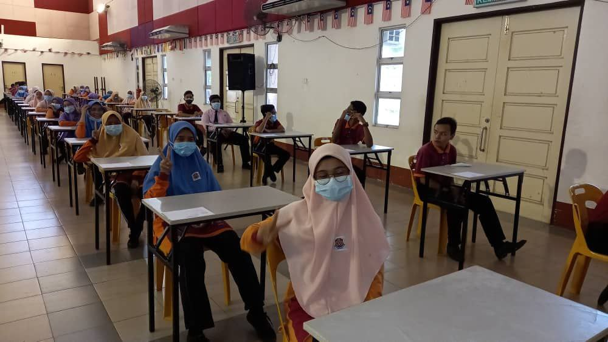
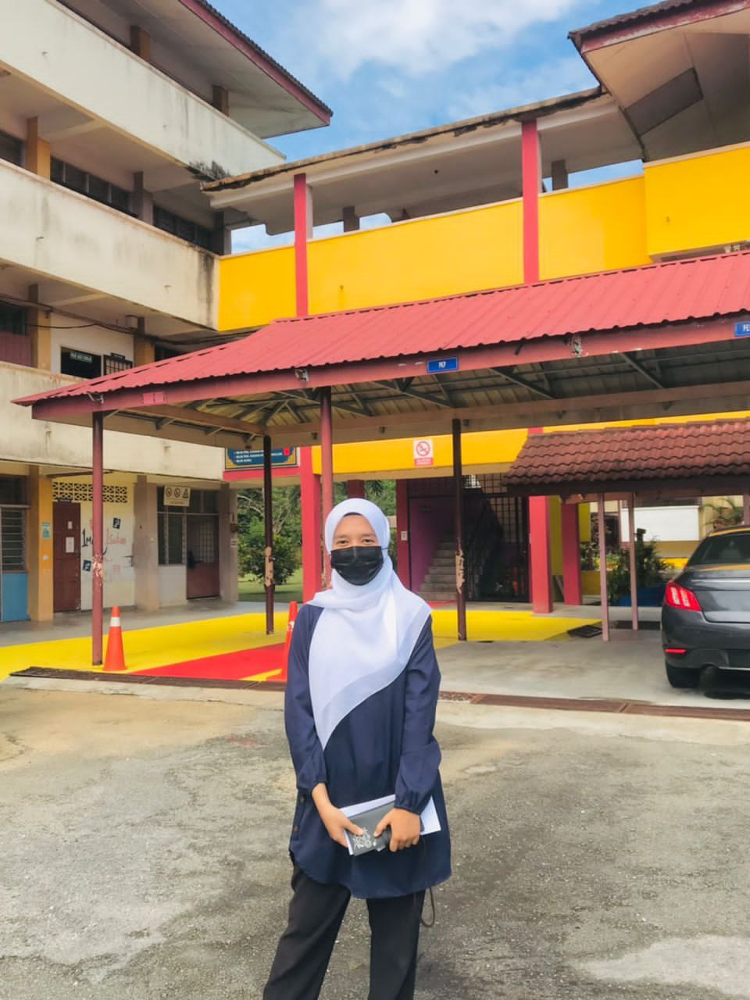

"Every experience is a positive experience if I view it as an oppurtunity for growth and self-mastery"

The most valuable experience is being a target student of SPM2020. At this time, I experienced various problems, pressures, and challenges that needed to be faced.

Efforts will not betray the results; I got excellent results in this exam. That picture is the day I got appreciation from the school.
During the semester break, I would spend the time have by working part-time and earning the first salary of my life.
In semester 3, I had the opportunity to participate in the Sulam Program and manage the program with other HBU132 friends. By participating in this program, I got to know the residents of Taman Fasa 4, which is close to UiTM Kedah.
Finally, I went on vacation to Langkawi for LIMA '23 last May. I also got to experience managing travel during the holiday period. Despite the many shortcomings of this vacation, I am still satisfied being able to experience all of this. This is my first experience travelling alone.